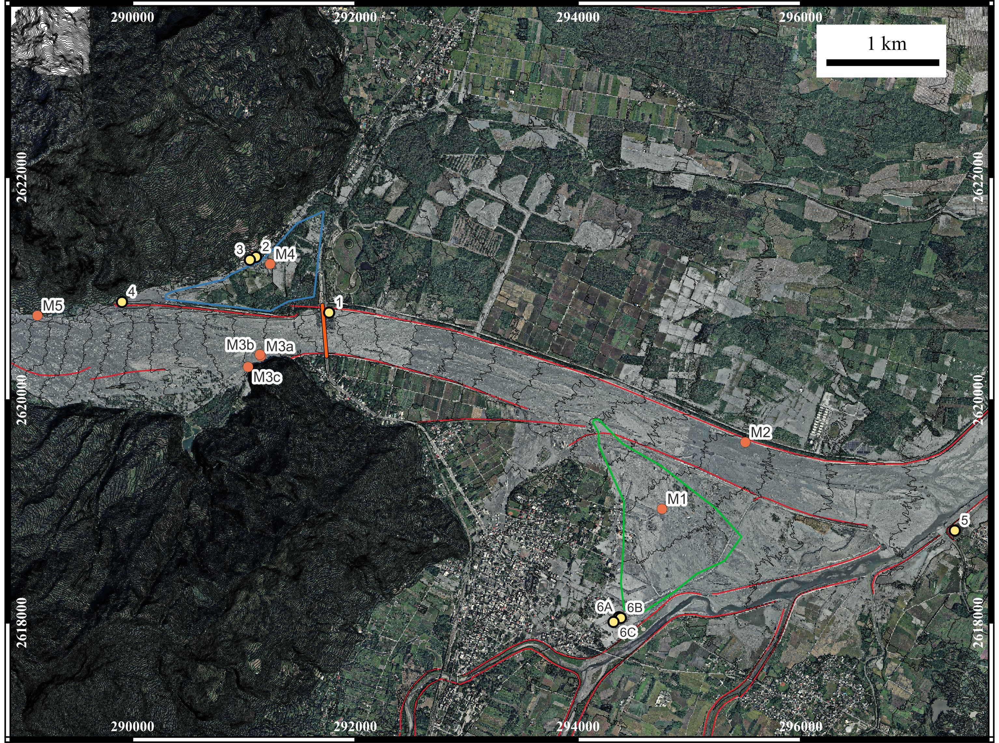

Select one or multiple samples below to compare their Particle Size Distribution (PSD) curves. The table below the chart will update automatically to show their corresponding parameters.
| Sample ID | D60 (mm) | D50 (mm) | D30 (mm) | D10 (mm) | Cu | Cc |
|---|---|---|---|---|---|---|
| No samples selected. Please select samples above to view data. | ||||||
Markers indicate where each sample was collected along the creek.

Download the complete dataset containing all samples, sieve sizes, passing percentages, and location data.
The table below outlines the corresponding experimental procedures and specific physical units.
| Column Name | Description, Experimental Procedure & Unit |
|---|---|
| Sampling & Geospatial Information | |
| Sample ID | Unique alphanumeric identifier for each sampling site. |
| Date_and_time | Timestamp of field sampling (YYYY-MM-DD HH:MM:SS). |
| Sampler | Name of the personnel who collected the sample. |
| WGS84_Lat | Latitude in the WGS84 coordinate system (Decimal Degrees). |
| WGS84_Lon | Longitude in the WGS84 coordinate system (Decimal Degrees). |
| twd97_E | Easting in the TWD97 (Taiwan Datum 1997) projected coordinate system (m). |
| twd97_N | Northing in the TWD97 projected coordinate system (m). |
| Bulk Sample Preparation & Field Moisture | |
| Bulk_Dish_g | Weight of the empty container (W1) used for the bulk soil sample (g). |
| Bulk_Wet_Soil_Dish_g | Weight of the container plus the wet bulk soil (W2) immediately retrieved from the field (g). |
| Bulk_AirDry_Soil_Dish_g | Weight of the container plus the bulk soil (W3) after prolonged laboratory air-drying preparation (g). |
| Bulk_Apparent_Moisture_pct | Apparent field moisture content (w), calculated prior to sieving: [(W2 - W3) / (W3 - W1)] × 100% (%). |
| Specific Gravity & Hydrometer Calibration | |
| Specific_Gravity_Gs | Specific gravity of soil solids (Gs), measured via pycnometer or assigned based on spatial proximity. |
| Hydro_Sample_AirDry_g | Weight of the air-dried fine soil fraction prepared for the hydrometer sedimentation test (g). |
| Hygro_Dish_g | Weight of the empty weighing bottle used for hygroscopic moisture determination (g). |
| Hygro_Wet_Soil_Dish_g | Weight of the weighing bottle plus air-dried fine soil before oven-drying (g). |
| Hygro_Dry_Soil_Dish_g | Weight of the weighing bottle plus absolute dry soil after oven-drying at 105°C for 24 hours (g). |
| Air_Dry_Moisture_pct | Hygroscopic moisture content of the air-dried fines (%). |
| Hydro_Absolute_Dry_Soil_g | Absolute oven-dry mass of the soil used in the hydrometer test (Ws), corrected as: [Air-dry mass / (1 + Hygroscopic moisture)] (g). |
| Sedimentation (Hydrometer) & Sieve Analysis | |
| Hydro_Time_min | Array of elapsed observation times during the hydrometer test (min). |
| Hydro_Reading | Array of uncorrected hydrometer readings (R) corresponding to the elapsed times. |
| Hydro_Temp_C | Array of suspension temperatures recorded at each hydrometer reading (°C). |
| Sieve_Opening_mm | Array of standard sieve opening sizes used in the mechanical sieve analysis for coarse fractions (mm). |
| Sieve_Retained_g | Array of the mass of dry soil retained on each respective standard sieve (g). |
| Particle Size Fractions (By Diameter D) | |
| Gravel_pct_75_to_4_75mm | Percentage of Gravel (75 mm > D ≥ 4.75 mm, retained on No.4 sieve) (%). |
| Coarse_Sand_pct_... | Percentage of Coarse Sand (4.75 mm > D ≥ 2.0 mm) (%). |
| Medium_Sand_pct_... | Percentage of Medium Sand (2.0 mm > D ≥ 0.425 mm) (%). |
| Fine_Sand_pct_... | Percentage of Fine Sand (0.425 mm > D ≥ 0.075 mm) (%). |
| Silt_pct_0_075_to_... | Percentage of Silt (0.075 mm > D ≥ 0.005 mm, passing No.200 sieve) (%). |
| Clay_pct_lt_0_005mm | Percentage of Clay (D < 0.005 mm) (%). |
| Gradation Curve & Index Properties | |
| Curve_Size_mm | Array of merged particle diameters (D) derived from both sieve and hydrometer analyses (mm). |
| Curve_Passing_pct | Array of cumulative percent passing corresponding to each particle diameter (%). |
| D60_mm | Particle diameter at 60% passing (D60) (mm). |
| D50_mm | Median particle diameter (D50) at 50% passing (mm). |
| D30_mm | Particle diameter at 30% passing (D30) (mm). |
| D10_mm | Effective particle diameter (D10) at 10% passing (mm). |
| Cu | Coefficient of Uniformity (Cu = D60 / D10), evaluating the gradation spread. |
| Cc | Coefficient of Curvature [Cc = D302 / (D10 × D60)], evaluating the gradation symmetry. |
-1 within the arrays indicate that the specific measurement was skipped, unmeasured, or deemed inapplicable for that particular sample.Specific_Gravity_Gs values were assigned to adjacent samples based on spatial proximity as follows: